Alma Sana, Corazón Libre
24 y 25 de octubre de 2026
Gimnasio de la Parroquia St. Gerard, Paterson, NJ
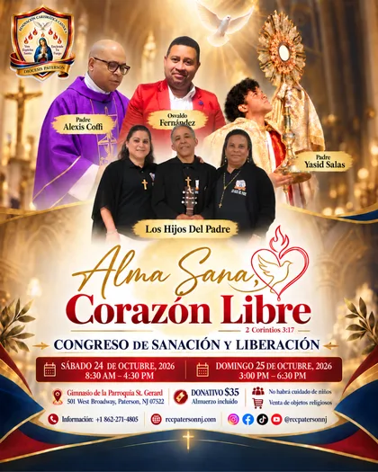
Toca el flyer para verlo completo
8:30 am – 4:30 pm
3:00 pm – 6:30 pm
St. Gerard, Paterson, NJ
Los Hijos Del Padre
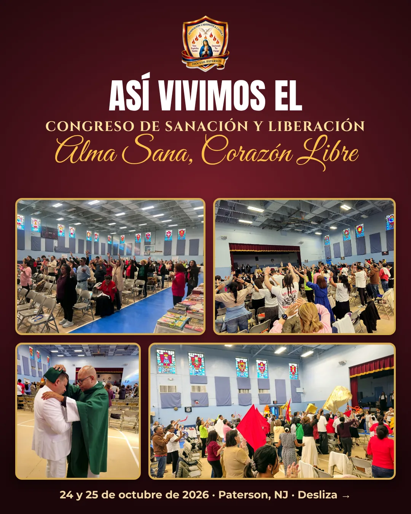
Durante dos días, la comunidad de la Renovación Carismática Católica de la Diócesis de Paterson vivió un tiempo de gran bendición en el Gimnasio de la Parroquia St. Gerard. Entre alabanza, la Santa Misa, la prédica y la exposición del Santísimo, el lema del año se hizo realidad: muchas personas recibieron sanación física y espiritual, y fueron liberadas por el toque tierno del Espíritu Santo.
«Los Hijos Del Padre hicieron honor al nombre de su ministerio, porque realmente se dejaron usar por Él. ¡Qué hermosas voces y cuánta unción!»— Marizabel Pérez, Coordinadora de Intercesión
Jóvenes tocados por el Señor que desean integrarse a la Renovación, personas que se acercaron para formar parte de un grupo de oración y muchos que compartieron cómo el Señor les transformó la vida.
«El pueblo se fue con otro brillo: alegre, contento, liberado, sanado. Muy agradecidos quedamos todos con las proezas y maravillas que Cristo hizo durante este Congreso.»— Teresa Amparo, Coordinadora de la RCC Paterson
«Donde está el Espíritu del Señor, hay libertad» (2 Corintios 3,17). ¡Gracias a todos los que vinieron y sirvieron!
Toca una foto para verla completa.
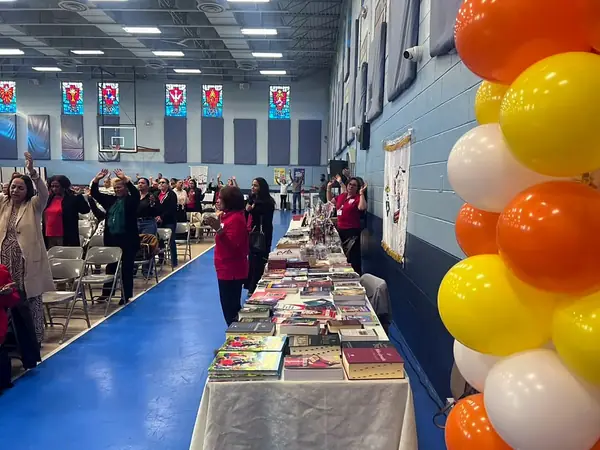
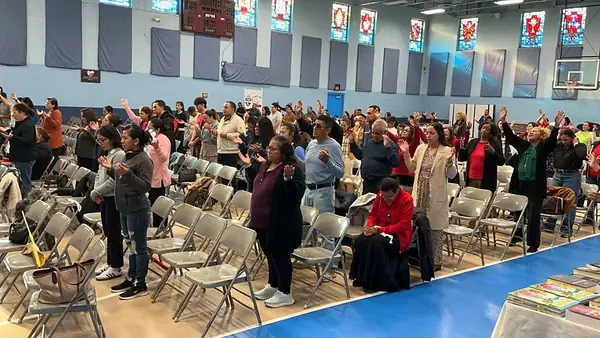
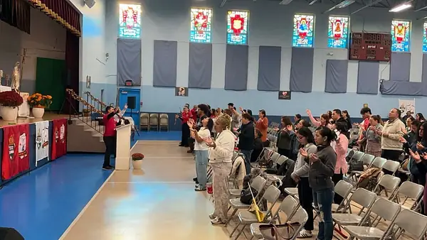
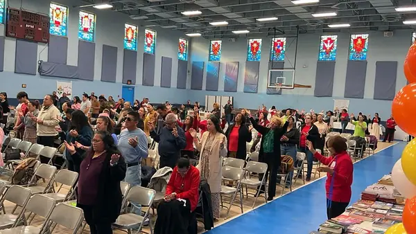
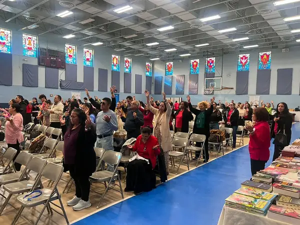
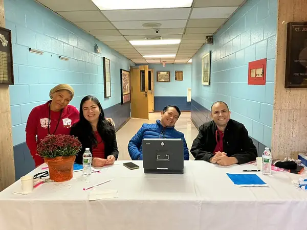
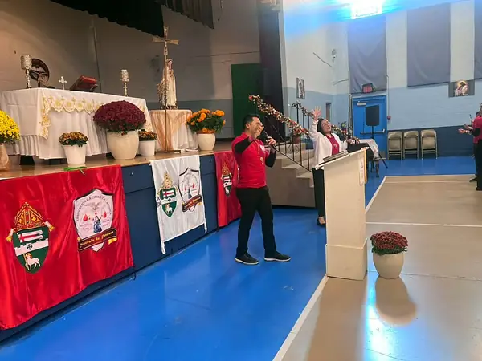
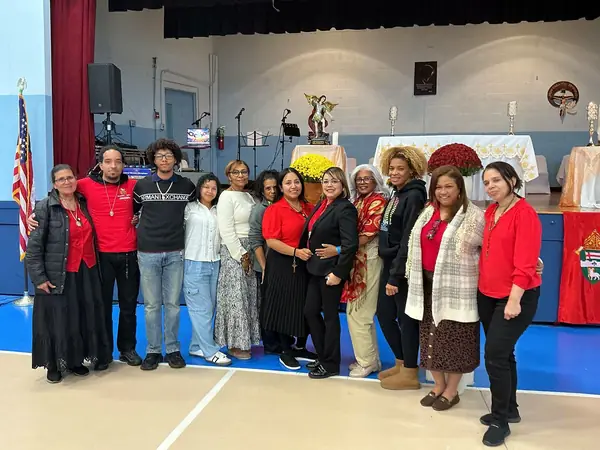
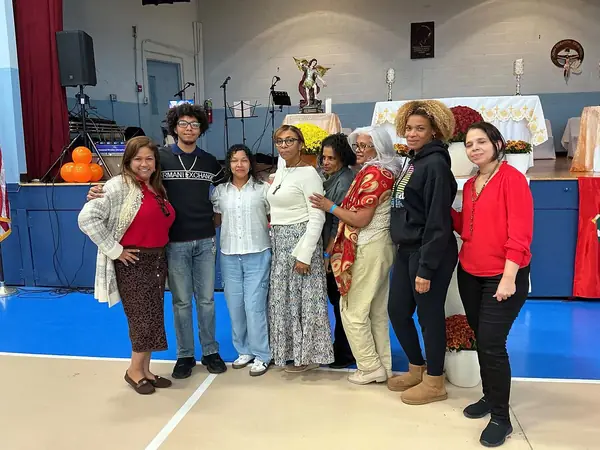
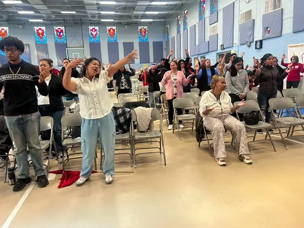
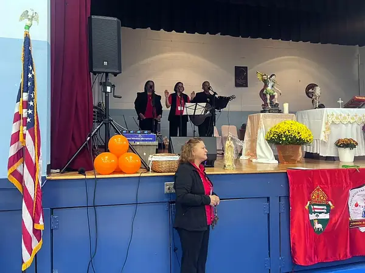
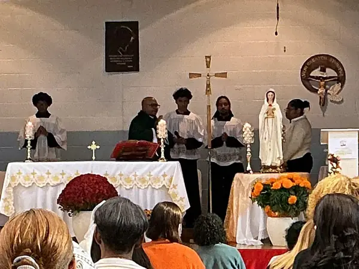
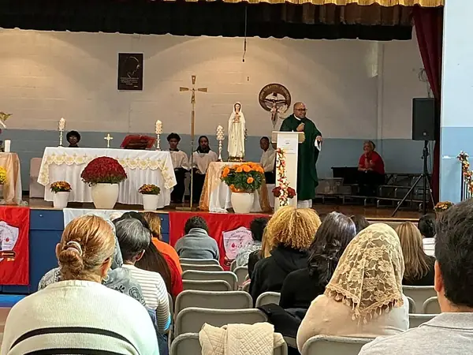
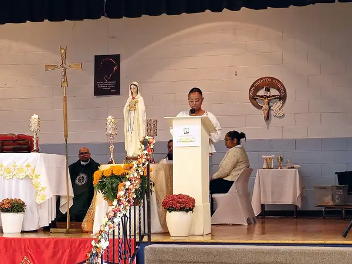
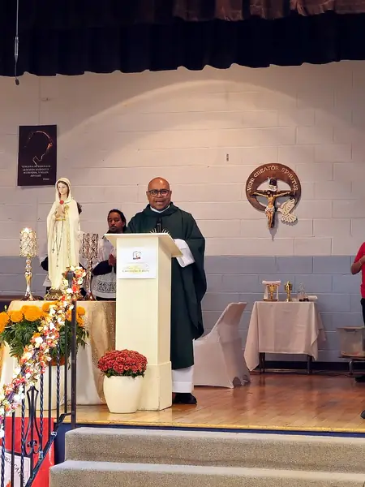
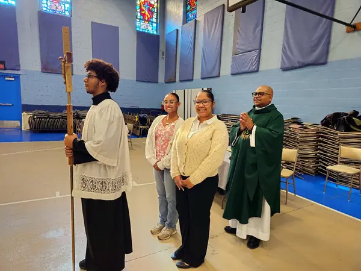
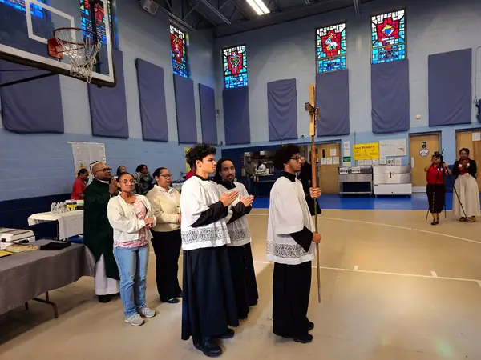
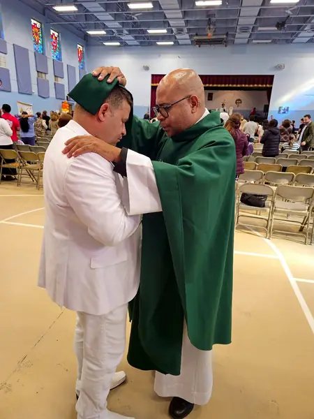
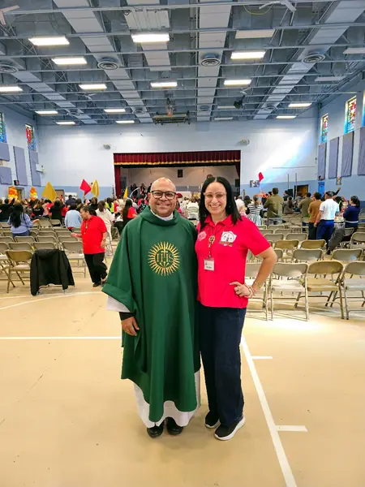
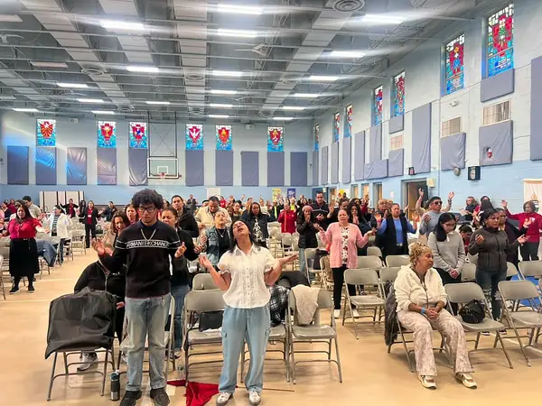
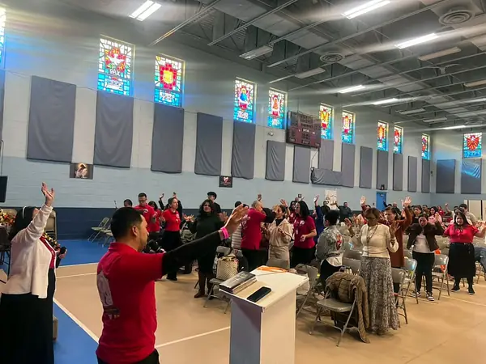
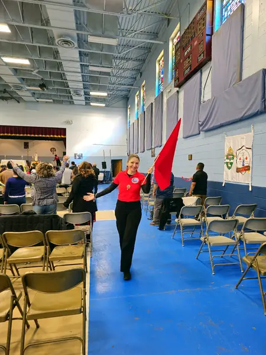
Toca una foto para verla completa.
Coordinadora · RCC Paterson NJ
Predicador católico
Dariberkis y Rafael Beato · Ministerio de Música
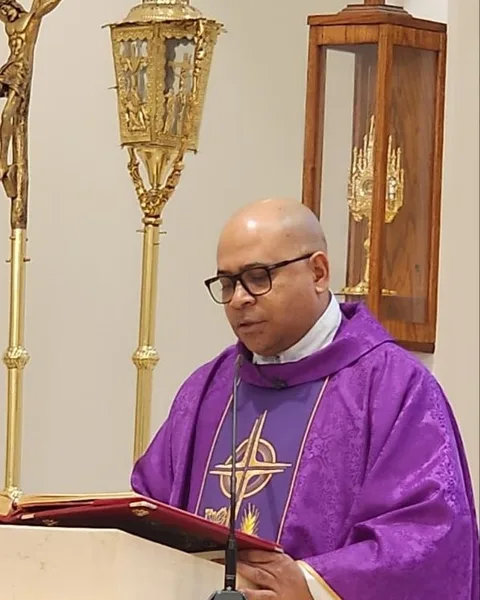
Vicario Parroquial
San Antonio de Padua · Passaic, NJ
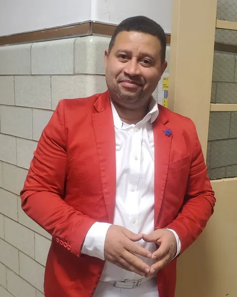
Predicador católico
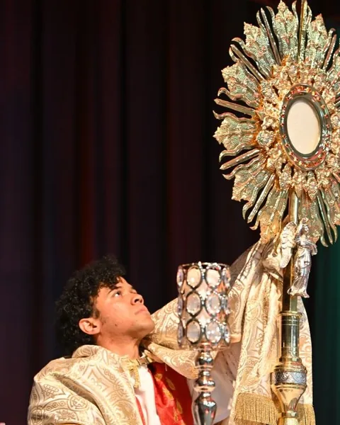
Director Espiritual
RCCPatersonNJ
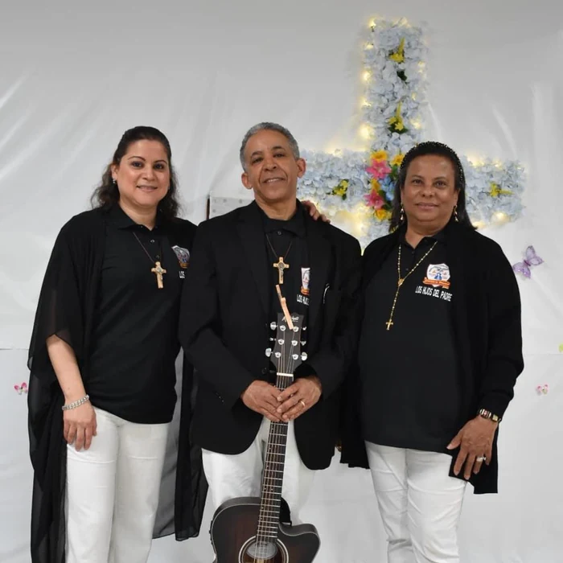
Ministerio de Música
El sábado 24 de octubre de 2026, de 8:30 am a 4:30 pm, y el domingo 25 de octubre, de 3:00 pm a 6:30 pm.
En el Gimnasio de la Parroquia St. Gerard, 501 West Broadway, Paterson, NJ 07522.
El Padre Alexis Coffi, Osvaldo Fernández y el Padre Yasid Salas. La música estuvo a cargo de Los Hijos Del Padre.
En la agenda de eventos del sitio. Para más información, llame o escriba por WhatsApp al +1 862-271-4805.